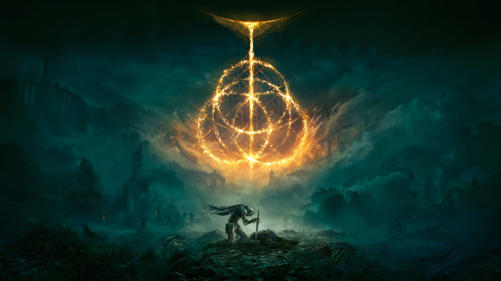

SAMURAI
SAMURAI
"Un combattant compétent originaire du lointain pays des roseaux. Il sait manier le katana et l'arc long."

Le Samouraï est une classe équilibrée, combinant Dextérité et Force pour un style de combat polyvalent. Il est équipé d’un katana et d’un arc long, ce qui lui permet d’être efficace à la fois au corps à corps et à distance. Son armure intermédiaire lui offre une bonne défense tout en conservant une mobilité décente. Avec une spécialisation dans les attaques tranchantes et perforantes, le Samouraï est une option parfaite pour les joueurs qui apprécient la précision et la flexibilité.